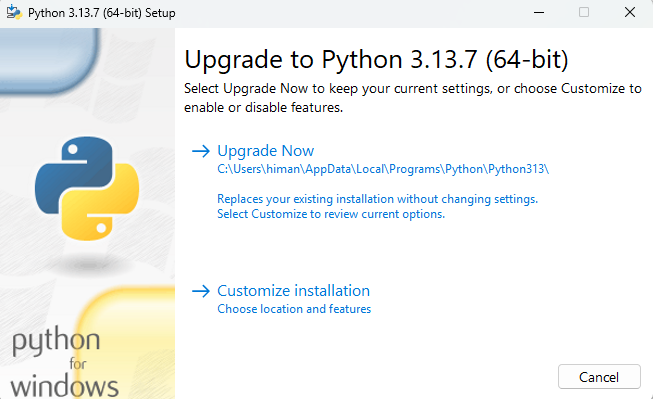
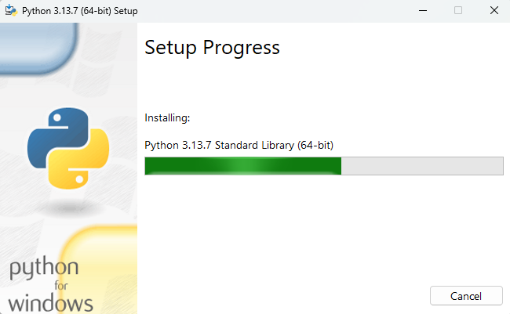
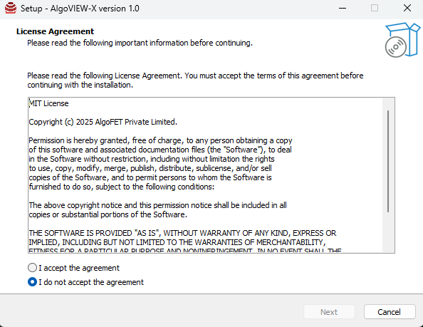
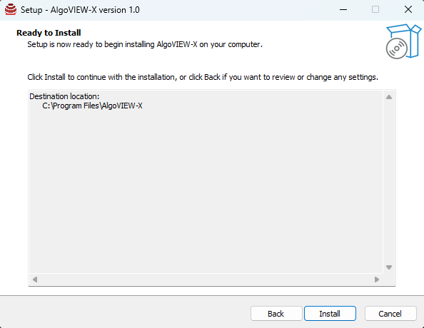
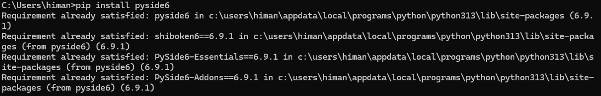
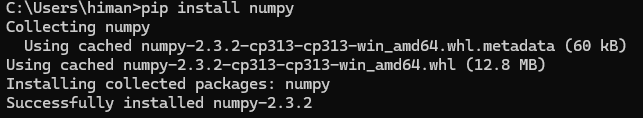
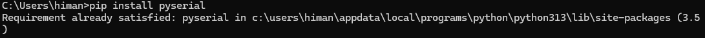
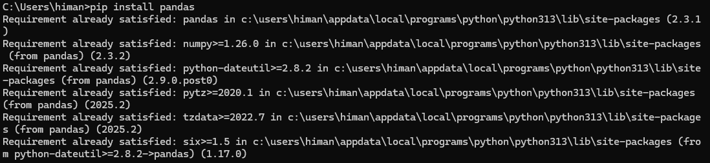

This document provides a step-by-step installation process for AlgoVIEW-X along with all required dependencies.
Please follow the steps carefully in the correct order.
Before installing AlgoVIEW-X, ensure you have the following:
⚠️ Note: Administrator privileges are required during installation.
The application communicates with the USB-TTL module using the CP210x driver between AlgoVIEW hardware and software.
CP210x_Universal_Windows_Driver folder.Instructions:
Right-click → Install).✅ Verification:
Open Device Manager → Expand Ports (COM & LPT) → Your USB-TTL device should appear without errors.
Instructions:
Right-click → Run as Administrator).



✅ Verification:
Open Command Prompt (CMD) or PowerShell and run:
python --version
Expected Output: Python 3.12.x
Instructions:

Instructions:



If the installation of AlgoVIEW-X or its dependencies fails, follow the steps below to resolve common issues.
If the provided driver files are corrupted, download the latest drivers from the official website:
üëâ CP210x Universal Windows Driver
Ensure Windows Driver Updates are installed.
Check for and install any pending Windows Updates.
Verify that you have the latest version of Python 3.12 (or higher) installed.
If LibInstaller fails, re-run the installer to ensure all required libraries are correctly installed.
If the problem persists, run the installation commands manually through Command Prompt (Run as Administrator).
pip install pyside6
Expected Output: 
pip install numpy
Expected Output: 
pip install pyserial
Expected Output: 
pip install pandas
Expected Output: 
pip install matplotlib
Expected Output:

✅ Following these steps should resolve most installation-related problems. If issues continue, please reach out to the support team with detailed logs and error messages.